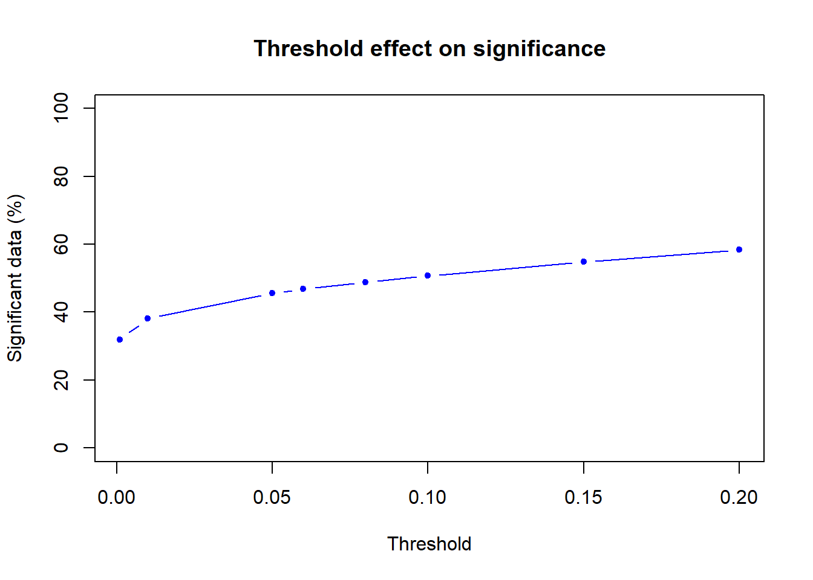
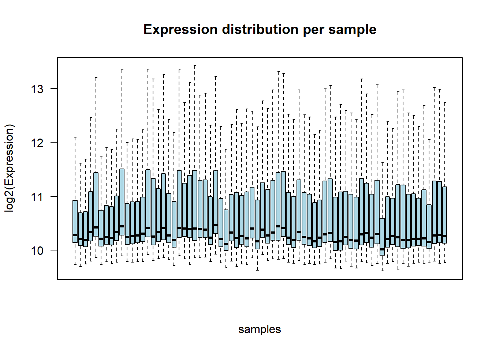
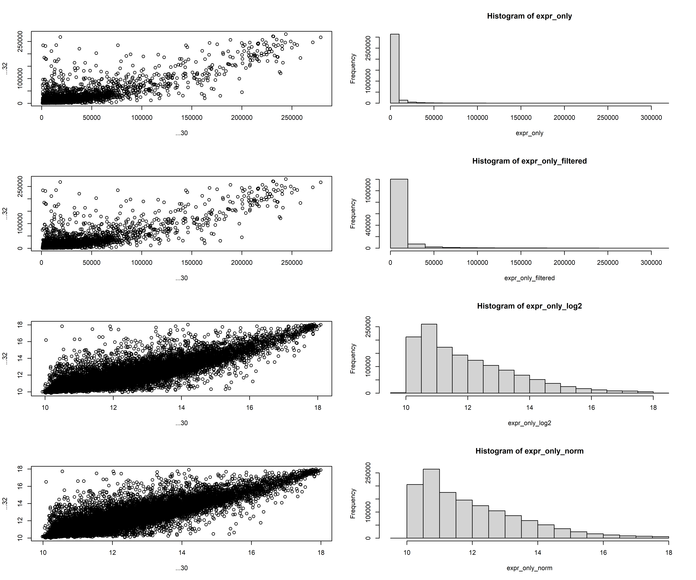
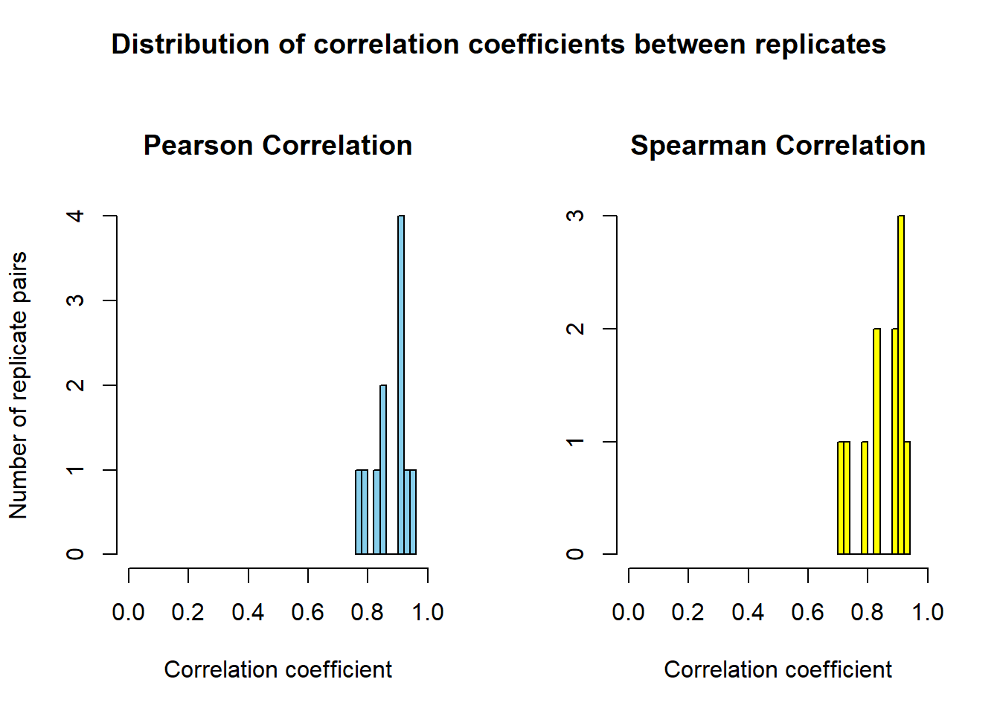
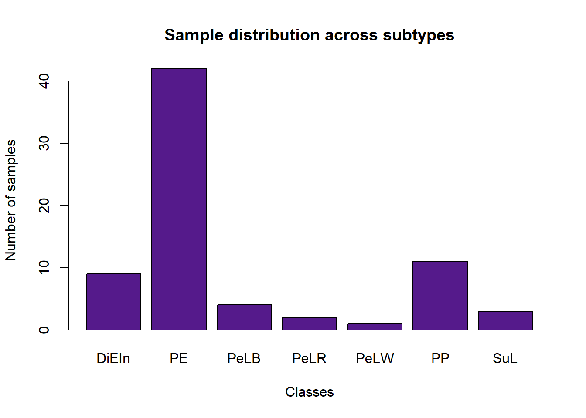
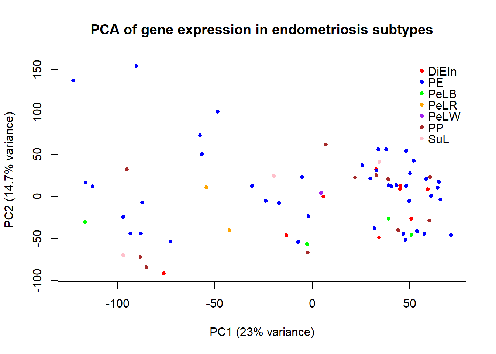
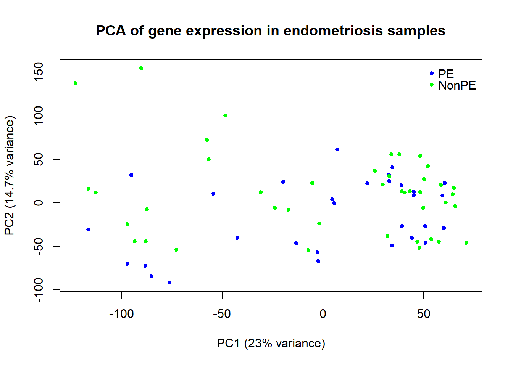

if (!requireNamespace("readxl", quietly = TRUE)) install.packages("readxl")
if (!requireNamespace("tidyverse", quietly = TRUE)) install.packages("tidyverse")
if (!requireNamespace("BiocManager", quietly = TRUE)) install.packages("BiocManager")
if (!requireNamespace("limma", quietly = TRUE)) {BiocManager::install("limma")}
library(readxl)
library(tidyverse)
library(limma)
library(stringr)One for all
yaml
Setting up the script
Install packages if needed and load packages
Load Data
setwd("C:/Users/jalli/Nextcloud/Systems Bio/Scientific Programming/EndoData")
Rdata <- read_excel("GSE141549_Non-normalized_data_GA_illumina_expression_platform_HumanHT-12.xls", col_names = FALSE, skip = 3)
# select only expression values + detection scores
ExprData <- Rdata %>% select(30:ncol(.))Exploring the data
Detection scores
# select only Detection Pval columns
Det_p_matrix <- ExprData %>% select(seq(2,ncol(.), by = 2)) %>% slice(-1) %>% sapply(as.numeric) %>% as.matrix()
#class(Det_p_matrix)
dim(Det_p_matrix)[1] 47323 72# find max value overall
max_p <- max(Det_p_matrix, na.rm = TRUE)
max_p[1] 1e+05#class(max_p)
# visualization of p-val density
det_p_vec <- as.numeric(as.vector(Det_p_matrix))
#class(det_p_vec)
dens <- density(det_p_vec)
plot(dens$x, dens$y, type = "l", main = "Density of detection scores", xlab = "Detection score", ylab = "Density")
Re-scale Detection scores to p-values in range [0,1]
norm_Pvals <- Det_p_matrix/max_pTest different p-value thresholds to retrieve amount of significant data.
sigf_thresholds <- c(0.2, 0.15, 0.1, 0.08, 0.06, 0.05, 0.01, 0.001)
sigf_data <- numeric(length(sigf_thresholds))
# iterate over every threshold value
# check every p-value
# count false and true
# calculate percentage of significant data
for (i in seq(sigf_thresholds)) {
good_probes <- norm_Pvals<sigf_thresholds[i]
num_true <- sum(good_probes)
num_false <- sum(!good_probes)
sigf_data[i] <- num_true/(num_false+num_true)*100
}
sigf_data[1] 58.39729 54.83028 50.69810 48.81362 46.78827 45.54281 38.08343 31.92352plot(sigf_thresholds,sigf_data, type = "b", ylim = c(0,100),pch=20, col = "blue",
xlab = "Threshold", ylab = "Significant data (%)", main = "Threshold effect on significance")
hist(norm_Pvals, breaks = 40, main = "Distribution of scaled detection scores with thresholds", xlab = "Scaled p-values")
abline(v = sigf_thresholds, col = "blue", lwd = 2, lty = 2)
Expression values
# extract expression data/remove p-values
expr_only <- ExprData %>% select(seq(1,ncol(.), by = 2)) %>% slice(-1) %>% sapply(as.numeric) %>% as.matrix()
#retreive GeneID vector and add them to expression matrix
ILMN_Gene <- Rdata %>% select(6) %>% slice(-1)
ILMN_Gene <- ILMN_Gene$...6
#ILMN_Gene
rownames(expr_only) <- ILMN_Gene
# visualization raw data
#raw <- boxplot(expr_only) # cannot really see much
#view(raw)Quality Control
# check for missing values
sum(is.na(ExprData)) # for whole matrix[1] 0sum(is.na(expr_only)) # only for expression values[1] 0PCA on raw data
# retrieve sample names
sample_names <- as.character(ExprData[1,])
sample_names <- sample_names[seq(1, length(sample_names), by = 2)]
subtypes <- sub("SAMPLE \\d+\\s+", "", sample_names)
subtypes <- sub("\\s+Replicate$", "", subtypes)
# define 'classes': all subtypes included
classes <- factor(subtypes)
classes [1] PE DiEIn PE PeLB PeLB PE PE PP SuL SuL PE PP
[13] PE PE PE PE PeLR PeLR PE PE PE PE DiEIn DiEIn
[25] PE PP PE PE PE PE PP DiEIn PE PE PE PE
[37] PE PeLW PP PE DiEIn PP PP PE DiEIn PP PE PE
[49] PE PE PE PeLB PeLB PE DiEIn DiEIn PE PE PE PP
[61] PP PE PE PE SuL PE DiEIn PE PP PE PE PE
Levels: DiEIn PE PeLB PeLR PeLW PP SuLgroup_colors <- c("DiEIn" = "red",
"PE" = "blue",
"PeLB" = "green",
"PeLR" = "orange",
"PeLW" = "purple",
"PP" = "brown",
"SuL" = "pink")
all_class_colors <- group_colors[classes]
# run + plot PCA
pca <- prcomp(t(expr_only), scale. = TRUE)
plot(pca$x[,1], pca$x[,2], xlab = "PC1", ylab = "PC2", main="PCA of raw data", col = all_class_colors, pch = 20)
legend("topright", legend = names(group_colors), col = group_colors, pch = 20, x.intersp = 0.6,
y.intersp = 0.6, bty = "n", bg = "transparent")
text(pca$x[,1], pca$x[,2], labels=colnames(expr_only), pos=2)
Hierarchical clustering
distMat <- dist(t(expr_only))
hc <- hclust(distMat)
plot(hc, main="Hierarchical clustering of samples - raw data", sub = "", xlab = "")
Check expression distribution across samples (before processing)
boxplot(log2(expr_only + 1), outline = FALSE, las = 2, main = "Expression distribution per sample",
ylab = "log2(Expression)", xaxt = "n", xlab = "samples", col = "lightblue")
Data filtering for significance
First approach:
Detect all p-values smaller 0.05 and filter out corresponding expressetion values.
# iterate over
# expression data -> odd columns
# p-values -> even columns
ExprData_filtered <- ExprData_scaled
for (i in seq(1, ncol(ExprData_scaled), by = 2)) { # iterate over all expression columns
expression_col <- i
p_column <- i+1
x <- ExprData_scaled[[p_column]] > 0.05 # check if p-value exceeds threshold, gives logic vector
ExprData_filtered[[expression_col]][x] <- NA # if yes -> set to 'NA'
ExprData_filtered[[p_column]][x] <- NA
}–> Problem: Now, there is a lot of missing values in the matrix, which hinders further processing and analysis.
Second approach:
Check overall significance of genes across all samples. Remove whole rows (genes), when fraction is below cutoff.
# expression matrix: ExprData
# Detection score matrix: Det_p_matrix
#
# function to re-scale p-values into range [0,1]
scale_Pvals <- function(ma){
ma <- as.numeric(ma)
ma / max(ma, na.rm = TRUE)
}
# re-scale p-Det_p_matrix column-wise to make samples comparable
Det_p_matrix <- as.data.frame(Det_p_matrix)
p_vals_only <- Det_p_matrix %>% mutate(across(.cols = seq(1, ncol(.)), .fns = scale_Pvals))Set p-value threshold
# calculates fraction of significant expression values for each gene and across samples
# uses p < 0.1
row_fraction <- rowMeans(p_vals_only < 0.1, na.rm = TRUE)
#row_fractionDecide for fraction cutoff
# visual determination of best cutoff choice
numb_genes <- length(row_fraction)
hist(row_fraction, breaks = 100, col = "orange", main = "Distribution of gene significance using row fraction (p < 0.1)",
ylab = "Number of genes", xlab = "Row fraction")
# Extract the 'good' genes --> 80% significance across samples
good_genes <- row_fraction >= 0.8
expr_only_filtered <- expr_only[good_genes,]
#dim(expr_only_filtered) Log2-Transformation and Quantile Normalization
expr_only_log2 <- log2(expr_only_filtered+1)
expr_only_norm <- normalizeBetweenArrays(expr_only_log2, method = "quantile")Visualizations
par(mfrow=c(4,2))
# non-filtered expression values
plot(expr_only)
hist(expr_only)
# filtered expression values
plot(expr_only_filtered)
hist(expr_only_filtered)
# log2-transformation
plot(expr_only_log2)
hist(expr_only_log2)
# normalization
plot(expr_only_norm)
hist(expr_only_norm)
par(mfrow=c(1,1))Aggregate probes
Probes are multiple expression representations for the same GeneID
# extract vector with GeneIDs
ILMN_Gene <- row.names(expr_only_norm)
#table(ILMN_Gene)
# average over replicates
## limma package, using mean for aggregation
expr_only_filtered_probes <- avereps(expr_only_norm, ID=ILMN_Gene) –> leaves 24.20% of the total amount of data.
Sample Replicates
How similar are the replicates to their original sample.
# retreive sample names + add to filtered matrix
sample_names <- as.character(ExprData[1,])
sample_names <- sample_names[seq(1, length(sample_names), by = 2)]
colnames(expr_only_filtered_probes) <- sample_names
# retrieve index of replicates + original
rep_idx <- grep("Replicate", colnames(expr_only_filtered_probes))
orig_idx <- rep_idx - 1 # original
# calulate pearson and spearman correlation
cor_pearson <- sapply(seq_along(rep_idx), function(i) {
cor(expr_only_filtered_probes[, orig_idx[i]], expr_only_filtered_probes[, rep_idx[i]], method = "pearson")
})
cor_pearson [1] 0.7907256 0.7721921 0.9448106 0.9113379 0.8322897 0.9173688 0.9274828
[8] 0.8591235 0.9086202 0.8540371 0.9163271cor_spearman <- sapply(seq_along(rep_idx), function(i) {
cor(expr_only_filtered_probes[, orig_idx[i]], expr_only_filtered_probes[, rep_idx[i]], method = "spearman")
})
cor_spearman [1] 0.7307444 0.7196070 0.9342578 0.8896065 0.7983091 0.9029425 0.9152935
[8] 0.8284983 0.8975673 0.8223654 0.9021343# visualization
par(mfrow=c(1,2),oma = c(0, 0, 3, 0))
hist(cor_pearson, main="Pearson Correlation", xlim=c(0,1), xlab = "Correlation coefficient", ylab = "Number of replicate pairs",
col="skyblue", breaks=10)
hist(cor_spearman, main="Spearman Correlation", xlim=c(0,1), xlab = "Correlation coefficient", ylab = "",
col="yellow", breaks=10)
title("Distribution of correlation coefficients between replicates", outer = TRUE)
par(mfrow=c(1,1))The ranges of the Pearson and Spearman correlation coefficients are high enough to justify keeping the replicates and treating them as regular samples. They contribute to biological variance in the data and do not indicate any technical bias.
Plot expression distribution again after processing
boxplot(expr_only_filtered_probes, outline = FALSE, las = 2, main = "Expression distribution per sample",
ylab = "log2(Expression)", xaxt = "n", xlab = "samples", col = "lightblue")
Class Imbalance
# retrieve sample names
subtypes <- sub("SAMPLE \\d+\\s+", "", sample_names)
subtypes <- sub("\\s+Replicate$", "", subtypes)
# create 'classes': all subtypes
classes <- factor(subtypes)
table(classes)classes
DiEIn PE PeLB PeLR PeLW PP SuL
9 42 4 2 1 11 3 # all subtype
barplot(table(classes), col = "purple4", main = "Sample distribution across subtypes", xlab = "Classes", ylab = "Number of samples")
# reclassification in PE vs. the rest (NonPE)
classes2 <- factor(ifelse(classes == "PE", "PE", "NonPE"))
table(classes2) classes2
NonPE PE
30 42 barplot(table(classes2), col = "purple4", main = "Sample distribution across two classes", xlab = "Classes", ylab = "Number of samples")
Analysis
PCA
# expression matrix: expr_only_filtered_probes
expr_for_pca <- t(expr_only_filtered_probes) # transposing
pca_norm <- prcomp(expr_for_pca, center = TRUE, scale. = TRUE)
var_explained <- summary(pca_norm)$importance[2, 1:2] * 100
pc1_var <- round(var_explained[1], 1)
pc2_var <- round(var_explained[2], 1)
print(paste("PC1:", pc1_var, "%", "PC2:", pc2_var, "%"))[1] "PC1: 23 % PC2: 14.7 %"# for all subtypes
group_colors <- c("DiEIn" = "red",
"PE" = "blue",
"PeLB" = "green",
"PeLR" = "orange",
"PeLW" = "purple",
"PP" = "brown",
"SuL" = "pink")
point_colors2 <- group_colors[classes]
plot(pca_norm$x[,1], pca_norm$x[,2],
xlab = paste0("PC1 (", pc1_var, "% variance)"), ylab = paste0("PC2 (", pc2_var, "% variance)"),
main = "PCA of gene expression in endometriosis subtypes",
col = point_colors2, pch = 20)
legend("topright", legend = names(group_colors), col = group_colors, pch = 20, x.intersp = 0.6,
y.intersp = 0.8, bty = "n", bg = "transparent")
# for PE vs. NonPE
colors <- c("PE" = "blue", "NonPE" = "green")
point_colors <- colors[classes2]
plot(pca_norm$x[,1], pca_norm$x[,2],
xlab = paste0("PC1 (", pc1_var, "% variance)"), ylab = paste0("PC2 (", pc2_var, "% variance)"),
main = "PCA of gene expression in endometriosis samples", col = point_colors, pch = 20)
legend("topright", legend = names(colors), col = colors, pch = 20, x.intersp = 0.6,
y.intersp = 0.8, bty = "n", bg = "transparent")
The PCA plots do not show any clear clustering, suggesting that there is little overall variance between the classes.
Differential Expressed Genes Analysis
# expression matrix: expr_only_filtered_probes
design <- model.matrix(~0 + classes2)
colnames(design) <- levels(classes2)
#design
fit <- lmFit(expr_only_filtered_probes, design)
cont <- makeContrasts(PE - NonPE, levels = design)
fit2 <- contrasts.fit(fit, cont)
fit2 <- eBayes(fit2)
deg <- topTable(fit2, adjust.method="BH", number=Inf)
# sign. DEGs for adj.P.Val < 0.1 und |logFC| > 1
sig_deg <- deg[deg$adj.P.Val < 0.1 & abs(deg$logFC) > 1, ]# visualize DEG: Volcano Plot
plot(deg$logFC, -log10(deg$adj.P.Val),
pch = 19, cex = 0.5,
col = ifelse(deg$adj.P.Val < 0.1 & abs(deg$logFC) > 1, "blue", "grey"),
xlab = "log2 Fold Change", ylab = "-log10 adjusted p-value",
main = "Volcano plot of DEGs (PE vs NonPE)")
# significance cutoff lines
abline(h = -log10(0.1), col = "magenta", lty = 2) # horizontal line for adj.P.Val < 0.1
abline(v = c(-1, 1), col = "magenta", lty = 2) # vertical lines for log2FC thresholds
# grey = not significant genes
# blue = significant genes
# how many genes up- or downregulated in PE compared to NonPE
table(sig_deg$logFC > 0)
FALSE TRUE
90 31 # downloading the results
# create matrices
deg_matrix <- as.matrix(deg) # all genes
sig_deg_matrix <- as.matrix(sig_deg) # only significant genes
# create files
setwd("path")
write.csv(deg_matrix, "DEG_all_genes.csv")
write.csv(sig_deg_matrix, "DEG_significant_genes.csv")The differential expression analysis compared gene expression between PE and NonPE samples. Out of 1,503 genes tested, 121 showed differential expression between the two groups.
Among these, 31 genes were significantly upregulated and 90 were significantly downregulated in PE compared to NonPE.